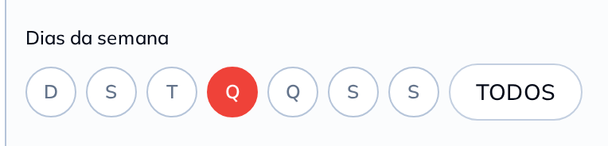

Programe o dia, o horário e se o banner vale no delivery, no salão ou nos dois.
A promoção entra e sai sozinha, e você não precisa voltar no sistema para desligar nada.
Vale para o cartaz de aviso também: o do feriado aparece só nos dias que você marcar.
